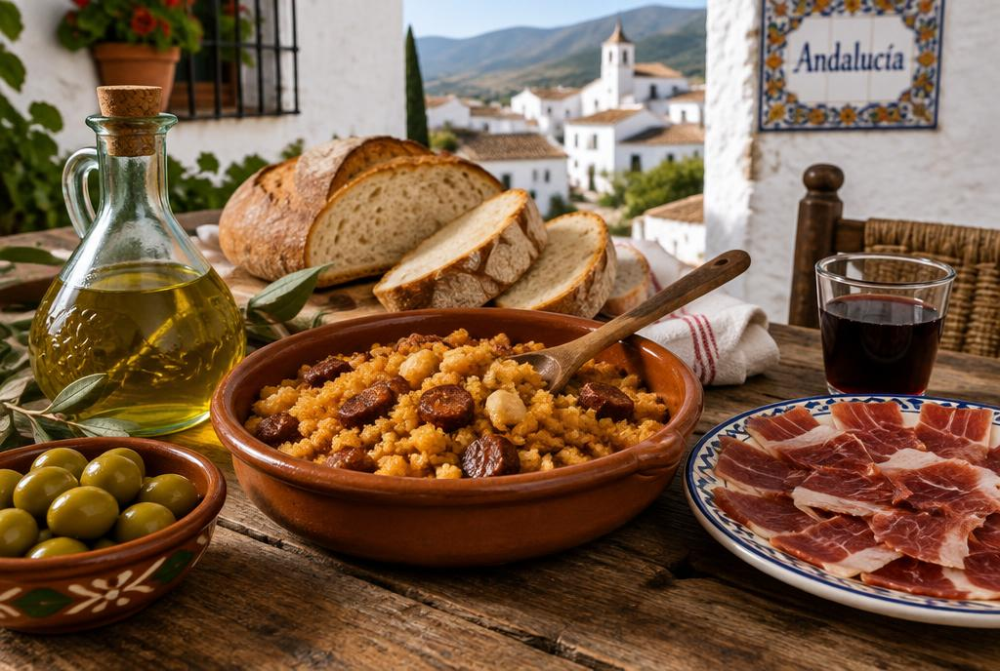

Sabores de Jaén
Gastronomía
Cocina humilde y sabrosa, siempre con aceite de oliva virgen extra.
Platos típicos
| Plato | Ingredientes principales | Temporada |
|---|---|---|
| Migas | Pan, ajo, aceite, chorizo | Invierno y días de lluvia |
| Andrajos | Masa de harina, tomate, bacalao o liebre | Invierno |
| Pipirrana | Tomate, pimiento, aceite, huevo cocido | Verano |
| Ochíos | Pan con pimentón y aceite | Todo el año |
El oro líquido
La provincia de Jaén es la mayor productora de aceite de oliva del mundo. En Castellar, la cosecha de la aceituna, de noviembre a enero, marca el ritmo del pueblo.
Mi opinión
[Escribe aquí tu opinión personal, sin IA, de al menos 4 líneas.]